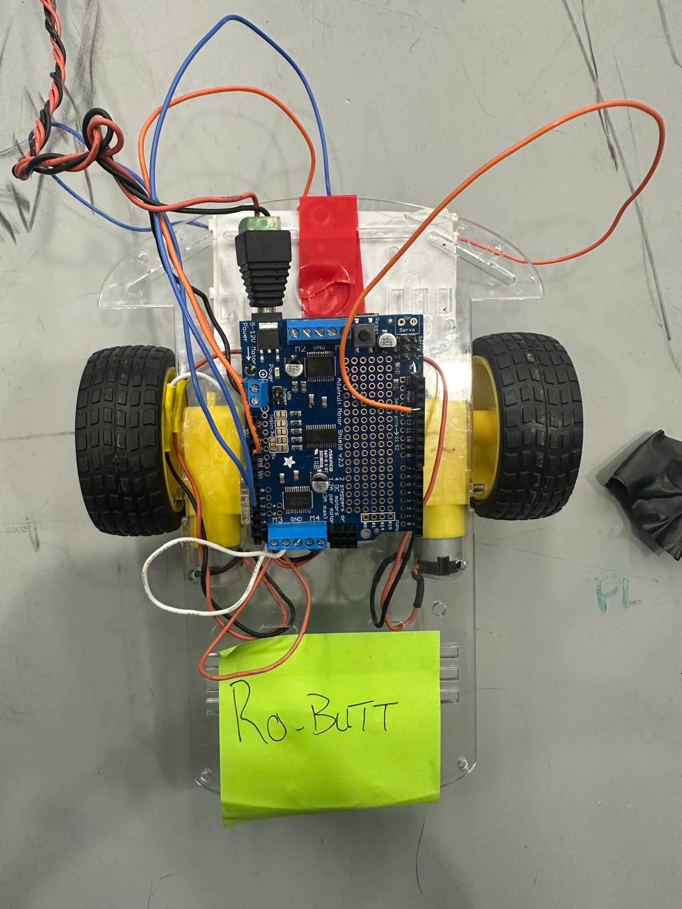
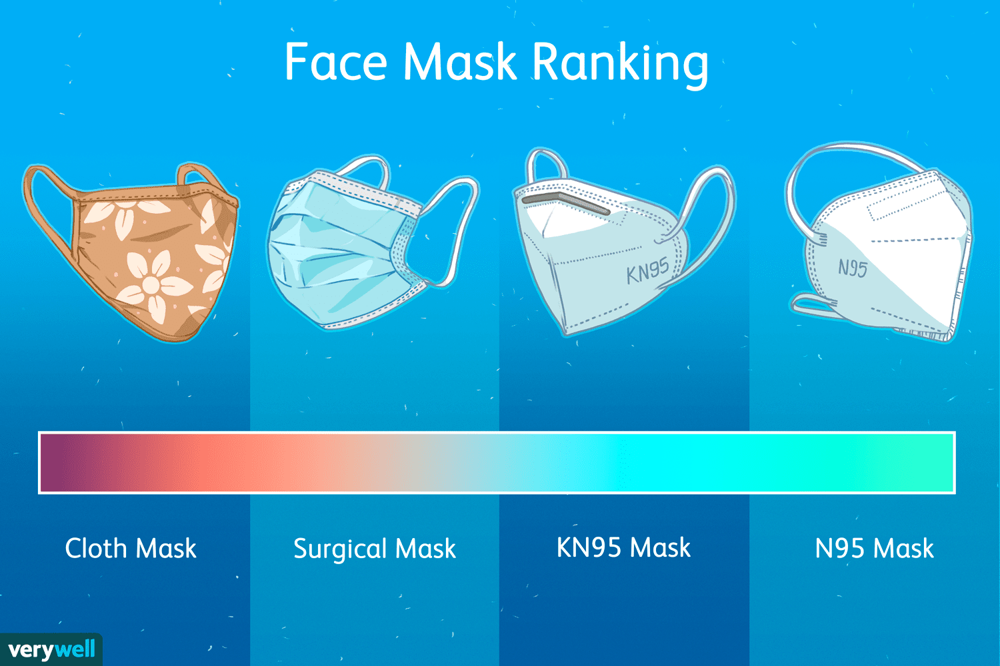

technical projects
engineering, data analysis, & more
nutritional trends analysis
python | data visualizationUtilized Python to summarize the USDA fooddata central API, automating the retrieval of nutritional information and creating visual distributions.
view github
emg-controlled prosthetic
arduino | python | raspberry pi | fabricationFabricated a prosthetic arm prototype controlled by EMG signals, implementing signal processing pipelines for real-time movement precision.
view details

pid line-following robot
arduino | embedded systemsDeveloped a line-following robot using Arduino and IR sensors, implementing a PID control system to optimize motor responsiveness.
view details

mask effectiveness model
matlab | statistical modeling | human centered design | thought experimentsModeled infectious outcomes to evaluate the role of mask compliance in reducing sick days using statistical distributions.
view details (statistical) view website (HCD)